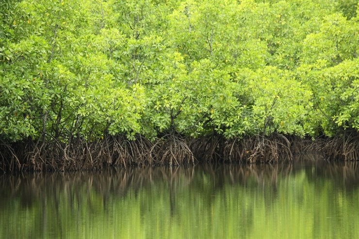

Cause & Impacts
Causes leading to Mangrove Forest Degradation
Mangrove ecosystems, critical and delicate habitats at the intersection of land and sea, face unprecedented challenges that threaten their existence. The causes of mangrove decline are multifaceted, rooted in pressures and stresses emanating from various directions.

Exploitation of Resources
One of the primary causes of mangrove degradation is the relentless exploitation of resources. Over-harvesting, driven by the demand for timber, fuel wood, and other products, puts mangrove ecosystems under severe strain. This unchecked exploitation not only disrupts the delicate balance within these habitats but also leads to the irreversible loss of biodiversity.
Climate Change
Sea level rise, attributed to global climate change, poses another significant threat to mangrove ecosystems. As sea levels increase, mangroves find themselves submerged, affecting their growth and survival. The alteration of tidal patterns disrupts the normal functioning of these ecosystems, leading to habitat loss for numerous species that depend on them. Rising temperatures and extreme weather events disrupt the ecological equilibrium, making it challenging for mangroves to adapt.
Deforestation for Development
Deforestation emerges as a prominent cause, driven by the relentless pursuit of development and infrastructure construction. Urban expansion, coastal developments, aquaculture projects, and agricultural ventures lead to the clearing of mangrove areas. This not only fragments the habitats but also eliminates the vital services these ecosystems provide.
Pollution
Pollution, originating from various sources such as industrial discharge, agricultural runoff, and improper waste disposal, significantly impacts mangrove ecosystems. Contaminants in the water can disrupt the intricate balance of these habitats, affecting the health of the flora and fauna that call mangroves home.
External Links
- What is a mangrove forest? - Mangrove for coastal defense - Mangrove forest - Status of Mangrove in Malaysia? - FAQ about the Forestry Department - Legal classes of forests and conservation areas in MalaysiaImpacts from Mangrove Forest Degradation
The impacts of mangrove decline reverberate across ecosystems, with far-reaching consequences that extend beyond the loss of these unique habitats. The shrinking of mangrove forests translates into a direct loss of the ecosystem services they bring along.
Increase effect of natural disasters
The decrease in mangrove coverage heightens vulnerability to natural disasters, increasing the damage inflicted on surrounding infrastructure. As mangroves act as natural barriers against storm surges and floods, their decline leaves coastal areas exposed and susceptible to more severe impacts from hurricanes, typhoons, and other calamities.
Increased rate of coastal erosion
Furthermore, the narrowing of beaches, a consequence of the accelerated erosion of coastal zones, poses additional challenges. Mangroves play a crucial role in stabilizing coastlines and preventing erosion, and their decline contributes to the loss of this protective function. The consequences extend to the communities residing in these areas, as the diminishing buffer zones leave them more susceptible to the destructive forces of the sea.
